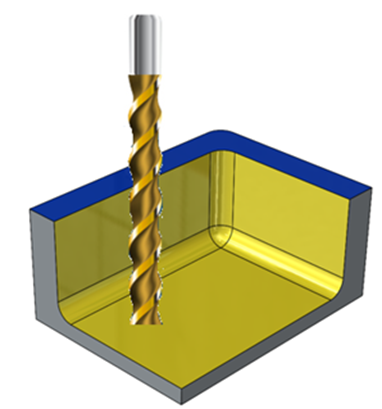

本ルールは、材料の被削性を確認し、設定された値に対して検証を行います。
被削性指数（Machinability index）は、材料がどれだけ容易に加工できるかを定義する指標です。例えば、ステンレス鋼（302、304、316、420 焼なまし）は、被削性が45%です。
高速度鋼（HSS）、チタン、工具鋼は加工が難しい材料です。加工コストを低減するためには、被削性の高い材料を使用することが望まれます。アルミニウム、マグネシウム合金、炭素鋼（1212、1213、1215）などの材料は、良好な被削性を有しています。
一般的な指針として、被削性の低い材料は加工時間を増加させ、追加の製造コストを発生させることが示されています。そのため、設計者は被削性の高い材料を使用することが推奨されます。
DFMPro には、材料の被削性があらかじめ定義されています。ただし、ユーザーは材料を追加し、被削性を設定することも可能です。
事前に設定された被削性の値は、ルールマネージャー内の Material Property ボタンから確認できます。

注記:
本ルールは、DFMPro データベースのアップグレード後に使用できます（DFMPro Database Upgrade）。